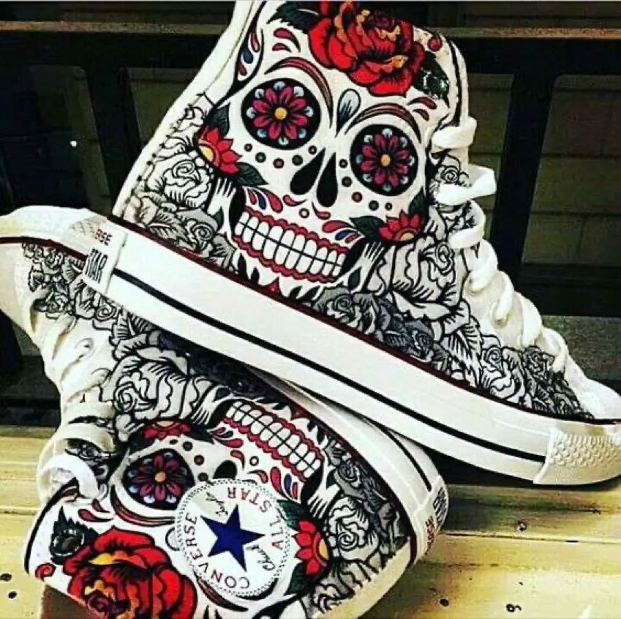

Роспись одежды, аксессуаров и предметов
Ручная роспись одежды и вещей на заказ
Не печатный принт и не картинка «как у всех». Сначала мы собираем идею в эскизе, а затем она получает фактуру красок, объём и характер на самой вещи.

Что можно расписать
Футболку, худи, джинсовку, куртку, обувь, сумку, шоппер, аксессуар, шлем, музыкальный инструмент или другой предмет. Для хлопка, денима, кожи и других поверхностей нужны разные материалы и подготовка, поэтому перед заказом Соловей сначала смотрит вещь и честно говорит, подойдёт ли она для росписи.
Можно прийти с готовым референсом, персонажем, фотографией, историей подарка или просто ощущением. Это подходит и для запроса «кастом одежды на заказ», и для более точечных идей: росписи джинсовой куртки, футболки, обуви, сумки, шлема или гитары.
Как рождается кастомная вещь
- Вы рассказываете, что хотите увидеть и какое настроение должна нести вещь.
- Мы выбираем направление и согласуем эскиз и расположение рисунка.
- До начала работы понятны материал, срок и точная стоимость.
- Соловей переносит рисунок вручную и собирает его слоями.
Главная точка — точное попадание в человека. В эскизе мы проверяем форму и смысл, а в реальности появляются живые мазки, глубина цвета и те детали, из-за которых вещь становится вашей.
Цена и заказ
Ручная роспись одежды и предметов стоит от 5 000 ₽. Итог зависит от размера изображения, сложности, поверхности и подготовки вещи. После обсуждения вы получите точную стоимость до начала работы. Способ передачи готовой вещи или доставки согласуем заранее.
Обсудить роспись с Соловьём ↗